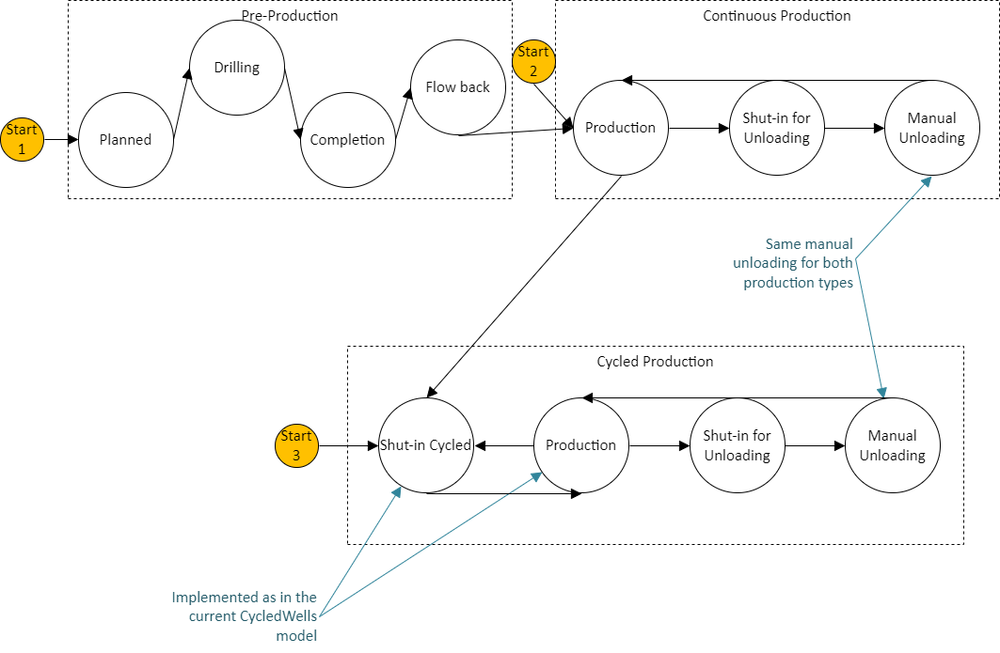

Consolidated well model

It is possible to start with one of the two starting points: PreProduction and Production.
PreProduction
The preproduction states are set to arbitrary time frames that indicate the wells going to preproduction stages. Each well-head has independent state times rather than clustering them into a single well pad. The user has the option to chose if they want to start a well sim with preproduction stage and put in approximate amount of times in the respective columns. The code picks a random time, uniformly distributed, within a 20 percent window from that approximate time. Each stage happens over a defined duration, followed by a delay – days to weeks – before the next stage happens.
Each well head in a well pad goes through the same operation (state) in a quick succession. This kind of clustering behavior is not modeled now and we only need to put in state times and delays in the study sheet for each well. This way, the analyst can cluster activities in a representative fashion.
Production
Production can be either Continuous production or Cycled production depending on the model ID. We specify the unloading and unloading shut-in time in the input sheets so the code knows when to change states. Continuous production wells are always in the production state before going to shut-in for unloading and unloading itself. They start producing again after unloading and continue the cycle.
Cycled production wells cycle between production and shut-in for some time and then go to shut-in for unloading and unloading. We approximate the shut-in time in cycling wells using total liquids produced per dump and mean production time. The user can specify variations in the production time and shut-in time. We approximate the shut in time for cycled wells as follows:
\(W_d=\) Water Production rate, bbl/day
\(O_d=\) Oil Production Rate, bbl/day
\(T_x=\) Total Liquids Produced per dump, bbl/dump
\(P_x=\) Mean production time, s
\(\Delta P_x=\) Assumed variation in production time, s
\(f_s=\) assumed fractional variation in the shut-in time, fraction on [0 1)
\[N=\frac{W_d+O_d}{T_x}\]Therefore, the total cycle time in seconds:
\[C_x=\frac{24*3600}{N}\]Since we’ve assumed the production time, \(P_x\), i.e. the amount of time liquids are produced within the cycle time:
\[S_x=C_x-P_x\]Variability in the shut-in time is set by the assumed fractional variation of the shut-in time, \(f_s\):
\[S_r=S_x\pm \Delta S_x\]\[\frac{\Delta S_x}{S_x}=f_s\]Automated unloadings do not apply; that’s essentially what cycled production achieves. The manual unloadings follow the same model as defined in Continuous Production section. Do not confuse the shut-in for the well cycling with a (typically longer) shut-in for the manual unloading.
The criteria for state change is the state duration we specify in the input sheet. Oil produced at the end is the column Oil Production in the study sheet. Water produced at the end is the column in the study sheet. Given the density (scf/bbl) of the flash produced in the condensate(oil), we generate the gas produced from the oil production value. Some gas is also produced from the water production. Cycled wells do not have an Automatic Unloading state.
It must be noted that Pre-production and Unloading states are not fully implemented. They’ll be a part of the future releases.
Wells are the starting point of the Fluid Flows.
Setups for Well Model
Specifying ’Simulation Start Point’ as ’PreProduction’, starts the simulation in PreProduction stage. This means all the columns specifying PreProduction behavior should be specified. Specifying ’Simulation Start Point’ as ’Production’, starts the simulation in Production stages and we can delete the PreProduction columns. The simulation chooses ’Production’ as default if ’Simulation Start Point’ column is not present.
Specifying ’Optional Unloading’ as True, means we simulate unloading stages. All the Unloading columns must be specified in this case. Default unloading type is Manual Unloading. We can specify Manual or Automatic Unloading in the study sheet. Specifying ’Optional Unloading’ as False, means we do not simulate any unloadings and the wells always stay in the Production stages. So we can delete all the columns that specify unloading behavior. Default value for ’Optional Unloading’ is False.
We can have any combination of the above setups along with cycling production or continuous production.
The most basic setup is to have only Production columns and the wells will always stay in the production stage.